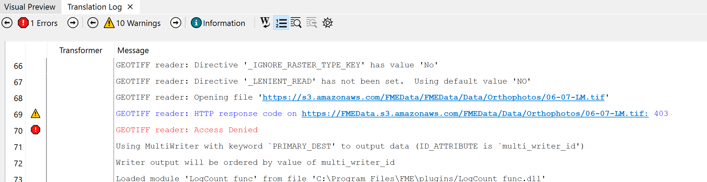
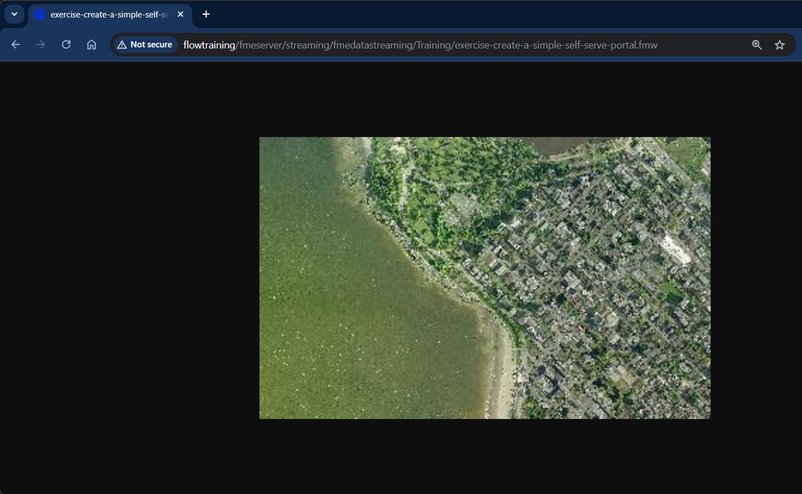

In the Build Versatile Self-Serve Workflows course, you can learn how to give the user control over additional parameters, including the size of the resampling and the input and output formats.
After completing this lesson, you’ll be able to:
As a technical analyst in the GIS department of your local city, you have plenty of experience using FME Form and are just getting started with FME Flow.
Other departments frequently ask the GIS team for orthophoto imagery of the city. Their format of choice is usually JPEG. Currently, you use an FME Form workspace to translate the data, adding to your workspace any special requests they have such as a particular resolution, a specific area of interest, or even sets of vector data stamped onto the raster.
However good you are with FME Workbench, it does take time to set up each of these individual requests. It would be far better if the other departments could help themselves to the raster data, with options for all of their special requests built-in.
You realize that a Data Download system implemented on FME Flow would be an ideal solution. In this exercise, you will take an existing workspace and publish it for simple self-serve.
Open the starting workspace using FME Workbench (2024.1 or later). If you examine the reader, transformers, and writers, you will see that this workspace:
If this workspace is published to FME Flow as is, users will be able to select the GeoTIFF files they wish to convert to JPEG and receive the results in a zipped folder.
In the Build Versatile Self-Serve Workflows course, you can learn how to give the user control over additional parameters, including the size of the resampling and the input and output formats.
It is usually a good idea to save and run a workspace locally before publishing to FME Flow. Running now will help you identify any errors.
Click the Save button. Save the workspace wherever you wish. Then click the Run button. When the translation is finished, click the Open Containing Folder button on your writer feature type. The written data should be a JPEG file (06_07_LM.jpg) along with a world file (06_07_LM.wld).
You may see an error message in the translation logs stating : GEOTIFF reader: Access Denied. You can ignore this as the translation will complete succesfully.

If you encounter other errors or are not familiar with saving and running workspaces, you should take the Integrate Data with the FME Platform learning path before proceeding.
Now publish the workspace to FME Flow. Register it with the Data Download service.
Remember: if you are reading a file or folder, you usually need to either publish the data with the workspace or upload it to an FME Flow Resources folder. In the case of this workspace, it is reading the data from a URL, so uploading the data to FME Flow is not required. Feel free to practice uploading it anyway.
Publishing and basic FME Flow data management are covered in the Publish Workflows to the Web learning path.
Log in to the FME Flow web interface, locate the workspace, and run it.
The workspace will run and you will be presented with a hyperlink to a ZIP file of the output dataset:
Click the link to download the ZIP file. You should find it contains the same files (06_07_LM.jpg and 06_07_LM.wld) as when you ran the workspace locally.
The ZIP file may place the JPG within a few nested folders. As covered in the previous lesson, you can adjust this structure during the Register Services step of publishing by clicking the Edit button.
Sometimes the end-users download data as JPEG just to open it in a browser or image viewer to inspect it. You realize that, in cases like this, they may be able to use a data streaming service, instead of a data download.
Let's try publishing the workspace under the Data Streaming service. When we use this service, the JPEG result of the translations should stream back to the user. Depending on their operating system and browser configuration, it will either download directly as a file or be displayed in the browser.
Publish the workspace to FME Flow.
In the final dialog of the publishing wizard, check the boxes to register the workspace with both Data Download and Data Streaming (but don't click Finish yet):

Click the Edit button for the Data Streaming service. Ensure that the service is using the output of the JPEG Writer (for now we're limiting the streaming of data to JPEG format):
In the FME Flow web interface, run the newly published workspace. In the parameters for the workspace, be sure to set the web service to Data Streaming instead of Data Download:
You should find that the results of the translation are returned as a streamed JPEG file. Most likely it will open directly in your web browser:
